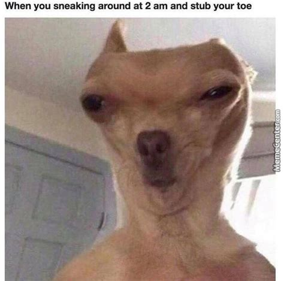
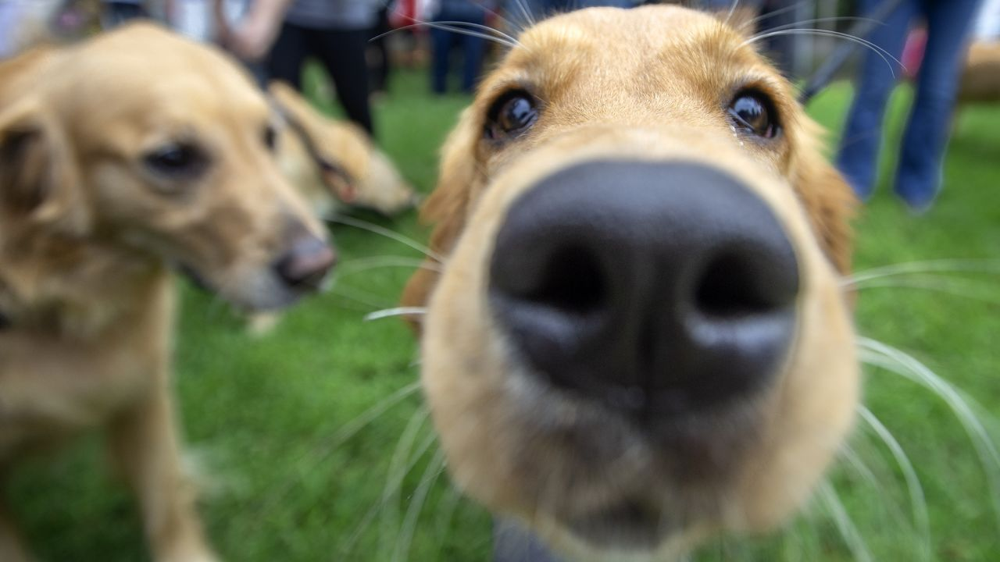

DOG_SORRIDENTE
@dogsfelizes_
A verdadeira viagem de descobrimento não consiste em procurar novas paisagens,
e sim em ter novos olhos.
A verdadeira viagem de descobrimento não consiste em procurar novas paisagens,
e sim em ter novos olhos.
Perdoar é libertar o prisioneiro... e descobrir que o prisioneiro era você.
Quando alguma coisa é importante o suficiente, nós fazemos com que ela aconteça
mesmo que tudo esteja contra.
Otimismo é a fé que leva a conquista. Nada pode ser feito sem esperança e confiança.

Quando alguma coisa é importante o suficiente, nós fazemos com que ela aconteça
mesmo que tudo esteja contra.